GIS Techniques for Cross-Time Analysis of China County Data
Mark Henderson [Mills College]
PhD, Environmental Science, Policy, and Management
University of California, Berkeley
Abstract: In this presentation I'll report on recent work on the regional systems analysis of contemporary China by Dr. G. William Skinner's team at the University of California, Davis, with particular emphasis on the techniques we have developed for managing and analyzing data for county-level administrative units whose boundaries change over time. The regional systems analysis project aims to model the spatial structures of China's economy and society at multiple hierarchical levels. GIS coverages of China's transportation network and county boundaries as of 1982 and 1990 provide the framework for carrying out this analysis. But county boundaries are subject to the modifiable areal unit problem (MAUP), which is only compounded when comparing units that change over time. To address this problem we have developed methods to split and merge counties to achieve units that are comparable across the time frame of our analysis. We manage and automate these analytical transformations using the region subclass features of Arc/Info GIS. These techniques may be applied fruitfully to the analysis of data for any administrative units whose boundaries change over two or more points in time.
I. Regional Systems Analysis of Contemporary China
The basic premise of regional systems analysis is that every city is a social and economic systems that itself located within spatially structured systems of cities. In agrarian societies we generally find a hierarchy of cities, from metropolises down to small market towns and villages. Cities at each level in the hierarchy form the core of a functional region that provides urban services to lower-level cities and a rural hinterland. Many social and economic phenomena vary in space according to position within these regions at each hierarchical level.
For the analysis of county-level data, our project focuses on two hierarchical levels in China. As you will all recall from Dr. Skinner's work, the uppermost level divides agrarian China into nine macroregions, each centered on an apex metropolis and each comparable in size, population, and spatial variation to an entire country in some other parts of the world. Here we see the Lower Yangzi macroregion, centered on Shanghai, with its most developed regional core shaded with the darkest color and the least developed periphery shaded lightest.
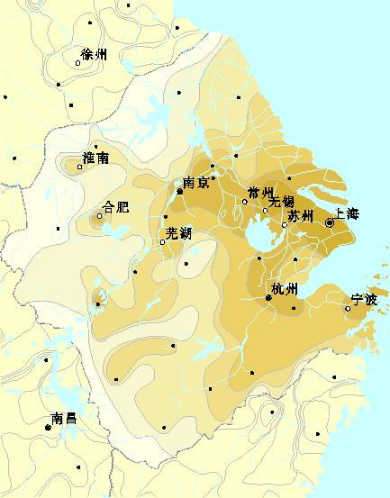
A second hierarchical level used in our analysis is that of Greater City systems. We find about 280 cities in China that serve as the core nodes of systems at this level. Here in schematic form we show the cores and peripheries of the Greater City systems in the Lower Yangzi macroregion.
In practice we assign counties or townships to classes of an "urban-rural continuum" at this hierarchical level based on an index of socioeconomic variables from which the portion attributable to position within the macroregional system has been removed; thus, our classification of counties into zones or classes at these two levels represent, as much as is possible, two orthogonal explanatory variables.
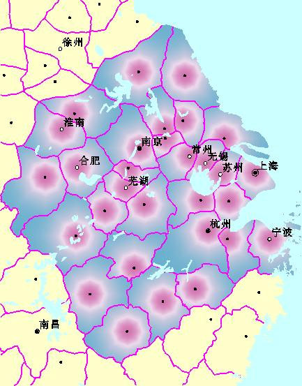
within the macroregional system has been removed; thus, our classification of counties into zones or classes at these two levels represent, as much as is possible, two orthogonal explanatory variables.
We can then analyze different social and economic phenomena of counties based on where each county falls in terms of regional cores and peripheries at these two hierarchical levels. For example, here we show the rate of female participation in agricultural occupations. For convenience we divide the range from core to periphery into a number of discrete zones. Note how this variable progresses rather smoothly from the upper left cell (representing core urban Shanghai) along both axes to the far right cell (representing the most rural counties in the far periphery of the macroregion).
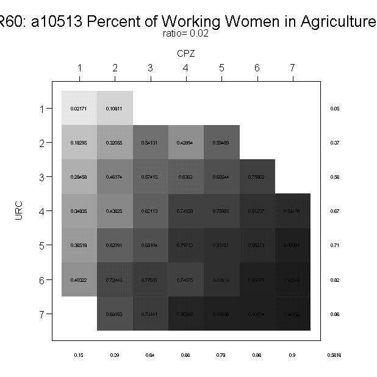
We have applied this technique to the analysis of China's birth planning policies and their effects up to the 1990 census using a sample of household data. Details of this analysis have appeared recently in English in Social Science History and in Chinese in the Journal of Population Science (†ìc–â5?). In short, we see similar systematic variation across our two analytical dimensions. Further grouping cells into analytical zones, we can conveniently display change in fertility rates over time for each zone.
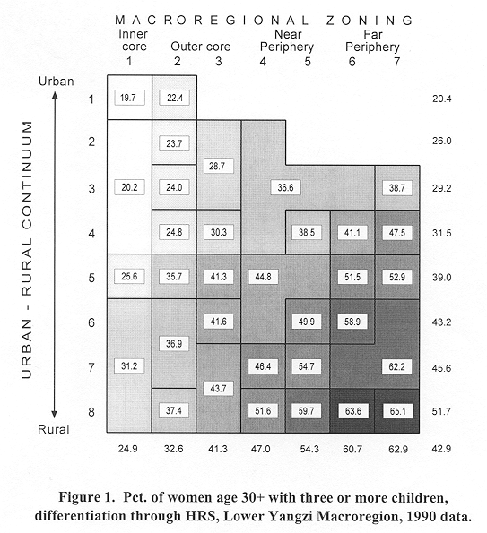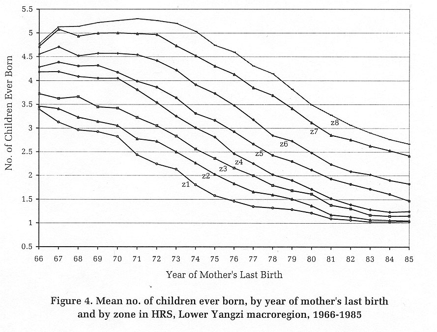
What data is required to support this analysis? Our statistical database includes information from the 1982 census and the 1985 agricultural census (both summarized at the county level), from the 1990 census (at the household and county level), as well as data from a 1988 study of Shandong periodic markets that we are using for a more detailed study of that province. Our GIS system relies on the 1:1,000,000 scale digital maps prepared by Dr. Larry Crissman's ACASIAN, including county boundaries and a transport network coded to include some 12,000 cities and towns as nodes; at UC Davis we have modified these GIS coverages to match the situation in China as of the 1990 census. We have also developed a more detailed digital map of Shandong province at 1:250,000 scale, including township boundaries and market locations within a detailed transport network.
I'll also make a brief mention of my own work extending this approach to the analysis of land conservation and environmental policy implementation. To track urban expansion within the regional systems framework, I'm using imagery from DMSP-OLS and Landsat satellites.
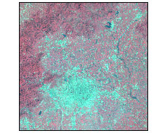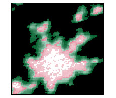
framework, I'm using imagery from DMSP-OLS and Landsat satellites.
Some recent developments from the regional analysis project at UC Davis include:
Based on our findings from the Shandong project, we are revising the all-China model to reflect an 8-level central place hierarchy.
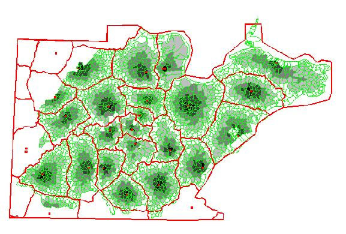
II. Cross-Time Analysis of County Data
As you are all aware, analyzing data for counties across time in a GIS framework presents certain challenges. Some of the most important relative to our project are:
Our approach to these challenges has involved creating a series of units that, for analytical purposes, can be treated as counties. The first of these artificial county-level units we call MQ (merged qu) units. Their creation addresses the cases where we find city qu (wards) for which data is published alongside statistics for counties, but which are too small to appear on 1:1,000,000 scale maps. For GIS purposes, these units are merged into a larger, mappable unit. A new Geocode is required to represent the merged unit in our GIS and tabular files; by convention for such artificial units we assign Guobiao-like codes ending in -51, -52, and so forth. For consistency we also apply this procedure to the few cases where city qu are mappable—for example, in Shanghai:
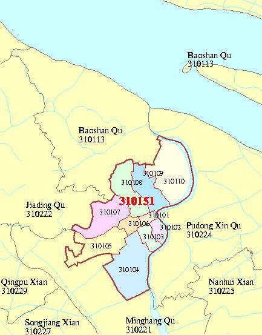
Another problem we face is that the Chinese government has been rapidly creating "county-level cities" within existing counties. As is evident on the map below, by 1990 there were a half-dozen of these county-level cities (outlined in pink) carved out of counties (outlined in grey) in the Yangzi Delta area alone. These cases exacerbate the Modifiable Areal Unit Problem, which is inherent to the analysis of irregularly drawn polygons such as counties. To make these cases more comparable to the usual case in which cities are considered a part of their surrounding county, we merge these units back to form MC (municipal compatible) units. Again, a new Geocode is required to represent these artificial units.
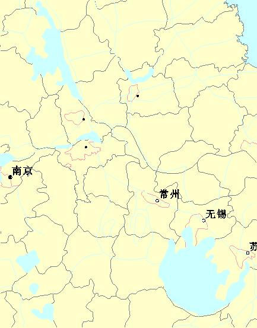
Yet another set of artificial units are required to analyze data for counties whose boundaries have changed over time. Our project currently is comparing changes from 1982 to 1990—a rather short time period compared with the range of Chinese history contemplated by the CHGIS project, but nonetheless one with a substantial number of county boundary changes. Cross-time comparisons require units with equivalent boundaries in each time period. Our approach is to merge the units from each time period to form the smallest common unit across both periods. Different units would have to be created for each pair of dates in a time series. Highlighted below at left are some of these merged XT units in central China; at right is a close-up view of the XT merger for Shanghai city.
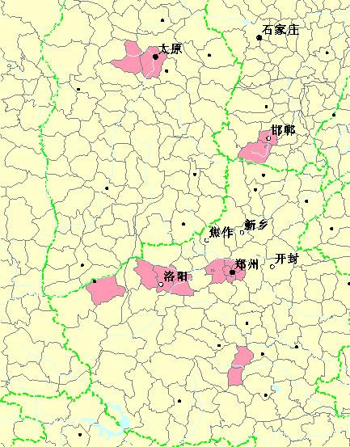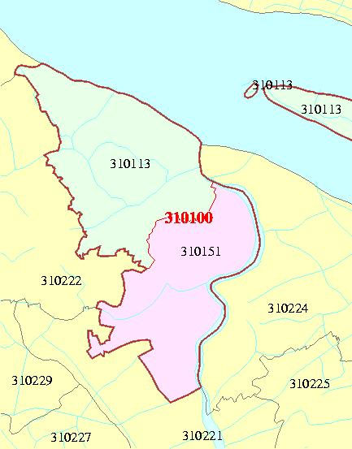
When it comes to defining the boundaries regional systems at the macroregional or greater city system levels, administrative boundaries do not always provide the best description of these functional systems. As a result, after regional systems are mapped with reference to topography and the transportation network, we may want to divide counties that straddle systems so that their data can be apportioned among these different systems. We dub these divided artificial counties RS (regional systems) units. Considering the relative spatial accuracy inherent in our 1:1,000,000 scale data, we only divide counties for which more than 15% of their surface area falls in each of two or more systems, unless a mapped town is located within a sliver of less than 15%. We then calculate the proportions of the counties' population that fall into each system by first considering the location of their mapped towns relative to the system borders and assigning the town populations directly to each system, and then allocating the county's rural population proportionally to the surface area of the county in each system.
To manage this assortment of county boundaries and artificially created MQ, MC, XT, and RS units, we rely on the Regions feature class of our Arc/Info Geographic Information System. Regions are an extension beyond the basic geometric feature classes of points, lines, and polygons. A "region" in Arc/Info consists of one or more polygons linked to a single database record. An Arc/Info coverage can have any number of region subclasses, all of which are built from the same underlying arc-and-polygon topology. When a coverage has region subclasses, the so-called "atomic polygons" represent the largest indivisible areal unit across all of the subclasses.
When it comes to generating the XT units required for cross-time analysis, Arc's REGIONXAREA command facilitates the identification of the different geocodes from each time period and the mergers that are necessary to create equivalent units. The command reports the percentage of each region from one subclass that falls into regions from any other number of subclasses. If the percentage is 100, the units are equivalent across time; if not, additional units can be merged until an equivalent unit is created.
Regions are thus very useful for managing a multitemporal spatial database, but for cartographic purposes we still find that it is more convenient to draw on the underlying arc-and-polygon topology. Thus we establish RELATEs from the region table to the arc and polygon tables in order to transfer certain attributes back to their geometrical components:
It is our hope that some of our experiences managing cross-time data will help inform the development of the Chinese Historical GIS project and other comparable projects.
8.10.2001